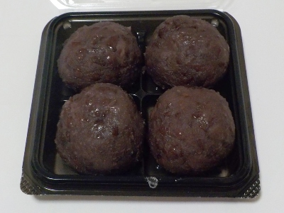

えんど屋のストリートビューはこちら
更新日 : 2026/09/28

ころころした感じのおはぎです。あんこいっぱいの和菓子風にも見えますが、中にはもち米が沢山入ってました。
お米ぎっしりなので満足感が高かったです。おはぎはお米はしっかりあった方が美味しいですね。
【おいしいものを食べよう。】【たくさん寝よう。】
【ソロ活をしよう!】【季節感のあることをしよう。】【動画視聴はほどほどに。】【当サイトの全てのコンテンツは無断転載禁止です。】